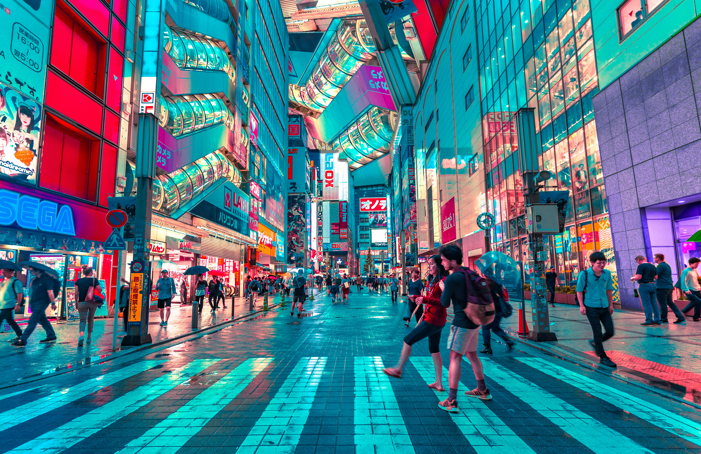

도쿄 여행
도쿄는 일본의 전통과 현대적인 문화를 동시에 경험할 수 있는 매력적인 여행지입니다. 도쿄타워, 시부야, 아사쿠사, 신주쿠 등 다양한 관광명소를 만날 수 있습니다. 맛있는 음식과 쇼핑, 아름다운 야경을 즐길 수 있어 많은 사람들이 도쿄를 여행합니다.
도쿄의 다양한 명소를 방문하면서 일본의 특별한 문화와 분위기를 느껴보세요. 맛있는 음식과 재미있는 볼거리로 잊지 못할 여행을 만들어보세요.

도쿄는 일본의 전통과 현대적인 문화를 동시에 경험할 수 있는 매력적인 여행지입니다. 도쿄타워, 시부야, 아사쿠사, 신주쿠 등 다양한 관광명소를 만날 수 있습니다. 맛있는 음식과 쇼핑, 아름다운 야경을 즐길 수 있어 많은 사람들이 도쿄를 여행합니다.
도쿄의 다양한 명소를 방문하면서 일본의 특별한 문화와 분위기를 느껴보세요. 맛있는 음식과 재미있는 볼거리로 잊지 못할 여행을 만들어보세요.